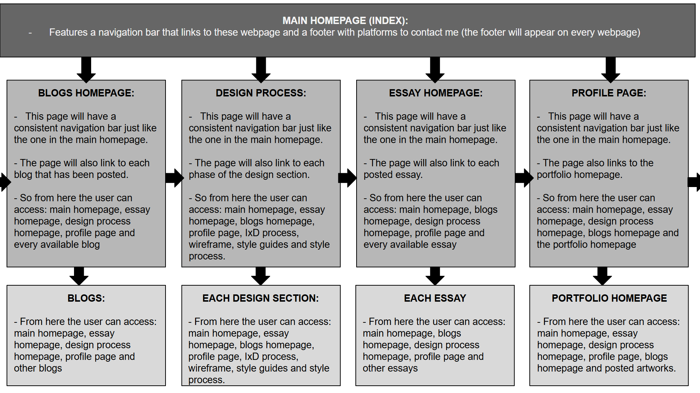

Documentation of IxD
GOAL ALIGNMENT
The goal of my website is to curate a chic, elegant, and sophisticated platform that includes some fashion elements - this choice is largely influenced by my interest in haute couture fashion culture and I want it to reflect my Interaction Design (IxD) process. The intention is to have a platform that’s polished and appears cohesive, offering users a sense of first-class treatment.
I plan to achieve this through making an accessible, refined, and visually engaging website that embodies the essence of a fashion catalogue. This is because in the broader spectrum, my target audience is animation and interactive media companies that are potentially offering employment opportunities. Additionally, I also want it to be a space for artists seeking inspiration through exploring my animation portfolio and my other artworks (some of which will have a blend of fashion within them).
At the core of my IxD process is ensuring a seamless and intuitive user experience where everything feels effortlessly available. This will go hand-in-hand with a well-structured UI with carefully curated colour palettes, high quality visuals and intentional font styles to make navigating the space feel intuitive to users. My website will have consistency and a strong information hierarchy so that key information is easy to find, encouraging users to interact with the site in a way that feels both inviting and effortless.
A crucial aspect of first-class treatment is making sure users never have to struggle to find what they need, navigation should feel smooth and instinctive. I also want my website to be versatile, it will be accessible across various devices and screen sizes.
INFORMATION STRUCTURE - CONTENT MAPPING
USER FLOW - SCREENS, BEHAVIOURS AND DECISIONS
LIST OF INTERFACE ELEMENTS
Navigation bar
Buttons - to move through my website
Links - to external websites
Search bar - used in Blogs Homepage to be able to pick up keywords that
correspond with the Blog title
Icons - for external platforms in my footer and the webpages on my nav
bar.